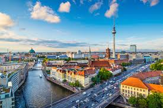

Germany
Berlin is a symbol of what has been lost, and what has been gained. Before the Berlin Wall
was torn down, a Socialist state wore down the lives of Germans all over East Berlin.
Seeing the marks on the city from Soclialism and how far they have come would be irreplaceable.

